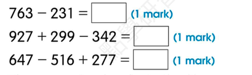

I ________ (prepare) my schoolbag every morning.
Answer:
已掌握
| # | 中文意思 | 例句/提示 | 英文默写 | 已掌握 |
|---|---|---|---|---|
| noun 名词 | ||||
| 1 | 主人 | The dog loves its . | ||
| 2 | 窗户 | Open the , please. | ||
| 3 | 清洁工人 | The works every day. | ||
| 4 | 分钟 | Please wait a . | ||
| 5 | 未来 | I will study hard in the . | ||
| 6 | 活动 | This is fun. | ||
| 7 | 飞机 | I can use in class. | ||
| 8 | 诗歌 | Read the . | ||
| verb 动词 | ||||
| 9 | 挖 | The dog can a hole. | ||
| 10 | 定位 | We can the place on the map. | ||
| phrase 短语 | ||||
| 11 | 脱下 | Please your shoes. | ||
| 12 | 晾衣服 | I can use in class. | ||
| adjective 形容词 | ||||
| 13 | 小的 | I can use in class. | ||
| modal verb 情态动词 | ||||
| 14 | 必须 | You finish your homework. | ||
| adjective/adverb 形容词/副词 | ||||
| 15 | 早的；早地 | I get up . | ||
| verb/noun 动词/名词 | ||||
| 16 | 旅行 | We during the holiday. | ||
| uncategorized 未分类 | ||||
| 17 | 收到 | I can use in class. | ||
| 18 | 遮盖 | I can use in class. | ||
| 19 | 找到 | I can use in class. | ||
| 20 | 地址 | I can use in class. | ||
| # | 单词/词组 | 中文意思 | 例句/说明 | 已掌握 |
|---|---|---|---|---|
| adjective 形容词 | ||||
| 1 | dangerous | The road is dangerous. | ||
| 2 | thick | This book is thick. | ||
| 3 | delicious | The soup is delicious. | ||
| noun 名词 | ||||
| 4 | pronoun | He is a pronoun. | ||
| 5 | character | The story has many characters. | ||
| 6 | court | We play on the court. | ||
| 7 | stadium | The game is in the stadium. | ||
| 8 | fable | The fable has a lesson. | ||
| 9 | musician | The musician plays music. | ||
| verb 动词 | ||||
| 10 | weigh | We weigh the bag. | ||
| 11 | collect | I collect stamps. | ||
| 12 | chase | The dog may chase the ball. | ||
| phrase 短语 | ||||
| 13 | Causeway Bay | I can use Causeway Bay in class. | ||
| 14 | capital letters | I can use capital letters in class. | ||
| 15 | ice lollies | I can use ice lollies in class. | ||
| adjective/noun 形容词/名词 | ||||
| 16 | round | The ball is round. | ||
| uncategorized 未分类 | ||||
| 17 | assessment | I can use assessment in class. | ||
| 18 | passage | I can use passage in class. | ||
| 19 | vocabulary | I can use vocabulary in class. | ||
| 20 | blanks | I can use blanks in class. | ||
| 21 | adjectives | I can use adjectives in class. | ||
| 22 | spelling | I can use spelling in class. | ||
| 23 | improvement | I can use improvement in class. | ||
| 24 | shout | I can use shout in class. | ||
| 25 | thief | I can use thief in class. | ||
| 26 | royal | I can use royal in class. | ||
| 27 | stone | I can use stone in class. | ||
| 28 | illustrate | I can use illustrate in class. | ||
| 29 | campsite | I can use campsite in class. | ||
| 30 | detail | I can use detail in class. | ||
| # | 中文意思 | 例句/提示 | 英文默写 | 已掌握 |
|---|---|---|---|---|
| time/date 时间日期 | ||||
| 1 | 七月 | is the seventh month. | ||
| 2 | 十二月 | is the twelfth month. | ||
| 3 | 星期六 | is a weekend day. | ||
| time unit 时间单位 | ||||
| 4 | 分 | A has 60 seconds. | ||
| numbers 数字 | ||||
| 5 | 7 | is 7. | ||
| 6 | 15 | is 15. | ||
| 7 | 17 | is 17. | ||
| 8 | 30 | is 30. | ||
| 9 | 40 | is 40. | ||
| 10 | 千 | One is 1000. | ||
| solid shape 立体图形 | ||||
| 11 | 三棱柱 | A has triangular faces. | ||
| 12 | 六棱柱 | A has hexagonal faces. | ||
| 13 | 五棱锥 | A has pentagonal faces. | ||
| 14 | 圆柱 | A has two circular faces. | ||
| 15 | 球 | A is round. | ||
| # | 单词/词组 | 中文意思 | 例句/说明 | 已掌握 |
|---|---|---|---|---|
| numbers 数字 | ||||
| 1 | 3-digit number | A 3-digit number has three digits. | ||
| geometry 几何 | ||||
| 2 | right angle | A right angle is 90 degrees. | ||
| 3 | parallel | Parallel lines never meet. | ||
| 4 | opposite side | The opposite sides are equal. | ||
| 5 | adjacent side | These are adjacent sides. | ||
| question word 题目词 | ||||
| 6 | calculate | Calculate the answer. | ||
| 7 | estimate | Estimate the answer first. | ||
| 8 | match | Match the number to the word. | ||
| 9 | respectively | Tom and Ben have 2 and 3 books respectively. | ||
| place value 位值 | ||||
| 10 | tens | The digit is in the tens place. | ||
| comparison 比较 | ||||
| 11 | least | Which number is the least? | ||
| 12 | fewest | Which group has the fewest? | ||
| time/date 时间日期 | ||||
| 13 | leap year | A leap year has 366 days. | ||
| position 位置 | ||||
| 14 | back | The desk is at the back of the room. | ||
| 15 | above | The clock is above the board. | ||
| operations calculation 运算 | ||||
| 16 | multiplication | Multiplication can use times. | ||
| 17 | product | The product is the answer in multiplication. | ||
| 18 | mixed operations | Mixed operations use more than one operation. | ||
| 19 | division | Division is the opposite of multiplication. | ||
| 20 | dividend | The dividend is divided by the divisor. | ||
| 21 | divisor | The divisor divides the dividend. | ||
| measurement 测量 | ||||
| 22 | measure | We measure the length with a ruler. | ||
| 23 | distance | Find the distance between the two points. | ||
| 24 | height | Measure the height of the box. | ||
| data charts 统计图 | ||||
| 25 | block chart | Read the block chart. | ||
| directions tool 方向工具 | ||||
| 26 | compass | A compass shows directions. | ||
| 句型结构 | ||||
| 27 | Angle ... is larger than Angle ... | Angle A is larger than Angle B. | ||
| 28 | The lines are perpendicular to each other. | The lines are perpendicular to each other. | ||
| 29 | ... is to the west of ... | The bank is to the west of the school. | ||
| 30 | ... is to the north of ... | The playground is to the north of the hall. | ||


